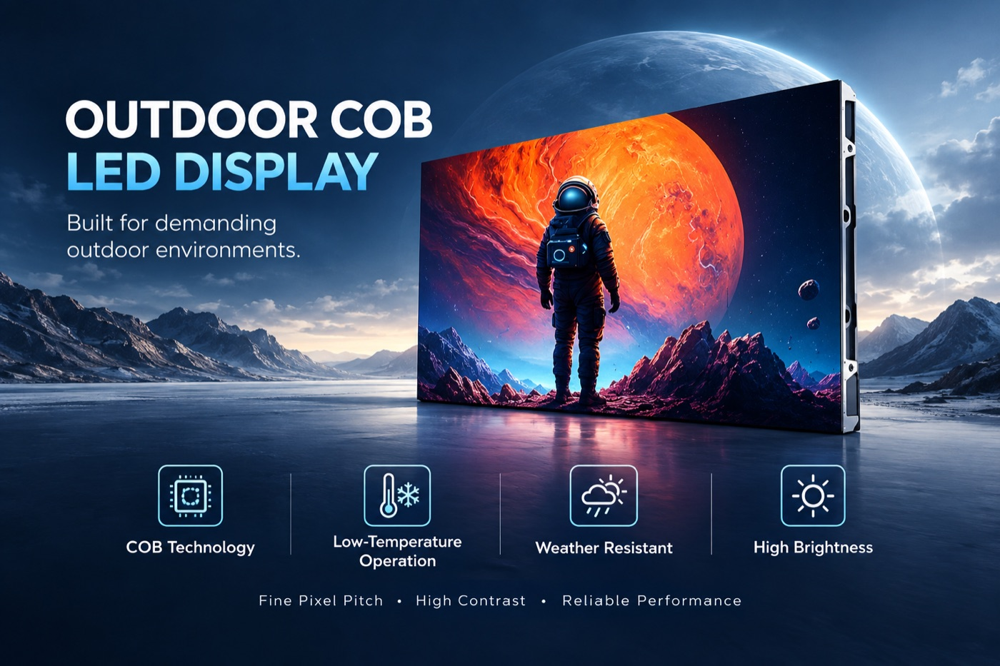
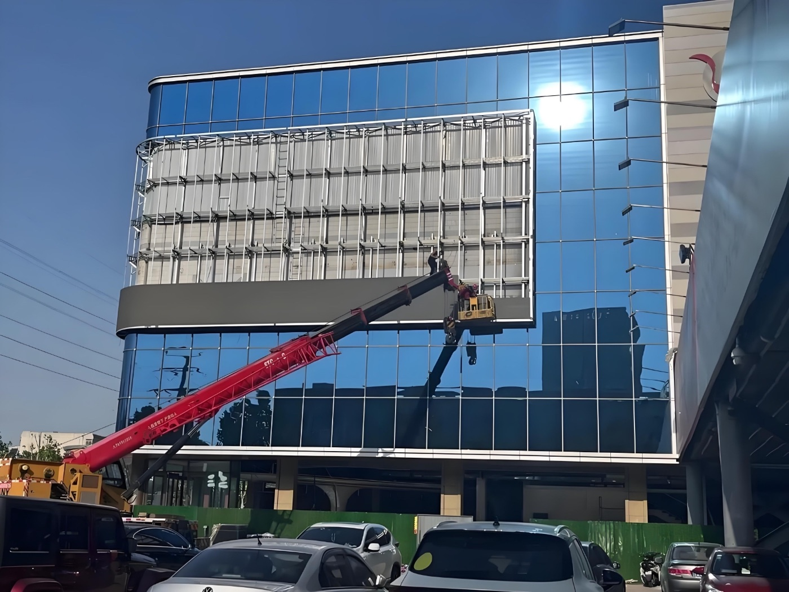

By David
What is led display outdoor high brightness? Led display outdoor high brightness is the level of light a screen produces to stay readable in sunlight, measured in nits. An outdoor screen needs several thousand nits, with auto-dimming for night. This 2026 guide explains the specification.
Sunlight is the hardest condition for a screen. The sun is far brighter than any screen, so the screen must produce enough light to compete and control the reflection. A screen that is bright enough in the day is often too bright at night, which is why the auto-dimming matters.
This led display outdoor high brightness guide is written for buyers of outdoor screens. It covers the nits, the dimming, the power, and the specification.
How Many Nits Does an Outdoor Screen Need?
The brightness is measured in nits, the light per square meter. A shaded indoor screen needs a few hundred nits; a sunlit outdoor screen needs several thousand. The exact figure depends on the sunlight and the viewing.
| Condition | Brightness Needed | Use |
|---|---|---|
| Indoor | 300-800 nits | Shops, offices |
| Indoor bright | 1,000-2,000 nits | Windows, atriums |
| Outdoor shaded | 3,000-5,000 nits | Sheltered outdoor |
| Outdoor sunlight | 5,000-10,000 nits | Direct sunlight |
A screen in direct sunlight needs the highest brightness, often 5,000 nits or more. A shaded outdoor screen needs less. The buyer should specify the brightness for the real condition, as noted in the brightness guide.

Why Does an Outdoor Screen Need Auto-Dimming?
| Condition | Brightness |
|---|---|
| Direct sun | Highest nits |
| Shaded outdoor | Moderate |
| Indoor bright | Lower |
| Indoor | Lowest |
A screen that is bright enough for the day is too bright for the night. The auto-dimming lowers the brightness as the light falls, so the screen is readable but not glaring. The dimming is essential for an outdoor screen.
The dimming should be smooth and follow the ambient light. A screen that jumps between the levels looks wrong. The buyer should confirm the dimming curve and the sensor.
✅ Brightness for the sunlight
✅ Auto-dimming for night
✅ Low-reflection surface
✅ Wide dimming range
✅ Power for the peak brightness
✅ Cooling for the heat
The Reflection
The brightness alone is not enough, because the sunlight reflects off the screen and washes out the image. A low-reflection surface, such as a matte mask, reduces the washout. The brightness and the surface work together, as noted in the contrast guide.
The buyer should specify the surface and test the screen in the sunlight. A screen that is bright but glossy looks washed out. The surface is part of the outdoor specification.

The Power and the Heat
A high-brightness screen draws more power and produces more heat, as noted in the energy guide. The power supply and the cooling must handle it. The buyer should confirm the power and the cooling for the brightness.
The heat is the enemy of the LED life, so the cooling is critical for a high-brightness screen. The buyer should confirm the cooling design. The brightness and the cooling work together.
The Viewing Conditions
The viewing conditions decide the brightness. A screen viewed from close up needs less than one viewed from far. A screen in the shade needs less than one in the sun. The buyer should map the conditions.
The time of day also matters, because the sun moves. A screen that faces the morning sun is different from one that faces the evening. The buyer should consider the sun's path.
Common Outdoor Brightness Mistakes
The common mistakes are too little brightness, no auto-dimming, and a glossy surface. Others include ignoring the power and the cooling and not testing in the sunlight. Each makes the screen hard to read or unreliable.
The remedy is to specify the brightness for the sun, add the auto-dimming, use a low-reflection surface, and confirm the power and the cooling. The screen then reads in the day and dims at night.
The Sunlight and the Orientation
The sun's position affects the screen's readability, because the direct sun is the worst case. A screen facing the sun needs more brightness than one in the shade. The buyer should consider the orientation.
The screen should also avoid the direct glare into the viewers' eyes, which the placement can manage. The buyer should plan the orientation for the viewers. The orientation is part of the design.
The sun's path changes with the season, so the worst case is the summer sun. The buyer should specify for the worst case, not the average. The specification covers the peak condition.
The Mask and the Contrast
The module's mask affects the contrast in the sunlight, because the mask controls the reflection. A deep mask improves the contrast, as noted in the contrast guide. The buyer should specify the mask.
The contrast matters as much as the brightness, because the washout reduces the readability. A bright screen with the poor contrast looks flat. The two together make the screen readable.
The buyer should test the screen in the sunlight, not only the night. The day test shows the real readability. The test is part of the specification.

The Reliability in the Weather
An outdoor high-brightness screen faces the weather as well as the sun, so the IP rating and the sealing matter, as noted in the IP guide. A screen that lets in water fails. The buyer should specify the rating.
The high brightness also means the high heat, so the cooling must handle the summer. The screen should run within the temperature range. The buyer should confirm the cooling design.
The reliability in the weather is part of the outdoor specification. A screen that survives the sun and the rain serves for years. The buyer should plan for both.
The Brightness and the Life
A high-brightness screen runs the LEDs harder, which shortens the life. The buyer should weigh the brightness against the life. The auto-dimming reduces the night brightness, which extends the life.
The screen should be specified for the brightness the project needs, not the maximum. A screen that runs far above the need wears faster. The buyer should match the brightness to the use.
The life also depends on the cooling, which the high brightness needs. The buyer should confirm the cooling, as noted earlier. The brightness, the cooling, and the life work together.
The Brightness and the Cost
The high brightness costs more, because of the LEDs, the power, and the cooling. The premium is the price of the daylight readability. The buyer should weigh the premium against the readability.
The high brightness also raises the running cost, because of the power, as noted in the energy guide. The buyer should consider the running cost, not only the purchase. The total cost is the fair figure.
The brightness should be matched to the project, so the cost is justified. A screen brighter than needed pays for the brightness it does not use. The buyer should specify the right brightness.
The Specification and the Site
The outdoor brightness specification should follow the site: the sun, the shade, the orientation, and the viewing. The buyer should map the site before choosing the nits, as noted earlier. The site decides the brightness.
The specification should also include the surface, the dimming, the power, and the cooling, which work with the brightness. The buyer should specify the whole package. The package makes the screen readable.
The buyer should test the screen at the site, in the real sunlight, before accepting it. The test proves the brightness. The site test is part of the acceptance.
The Buyer's Role
The buyer should specify the brightness for the site and the use, with the surface, the dimming, and the cooling. The specification makes the screen readable. The buyer's role is to map the conditions.
The buyer should also test the screen in the sunlight before the acceptance. The test proves the readability, as noted earlier. The buyer's test is the check.
The buyer should keep the records, with the specification and the test. The records support the warranty. The buyer's record is the evidence.
Planning the Outdoor Screen
The led display outdoor high brightness screen produces several thousand nits to compete with the sun, with auto-dimming for night. Specify the nits, the surface, the power, and the cooling for the real conditions.
Buyers who specify the brightness for the sunlight and the dimming for the night get a screen that reads around the clock. The brightness is the heart of the outdoor specification.
FAQ
Sources and Further Reading
Related Articles

For this requirement our range covers it directly: the COB EF outdoor series (IP65, 3000 nits) and the D-PRO outdoor series (front maintenance).
Spec an Outdoor Screen
Tell us your site and sunlight, and we will specify the brightness, surface, and dimming for your outdoor LED display.
Request Outdoor SpecChat on WhatsApp